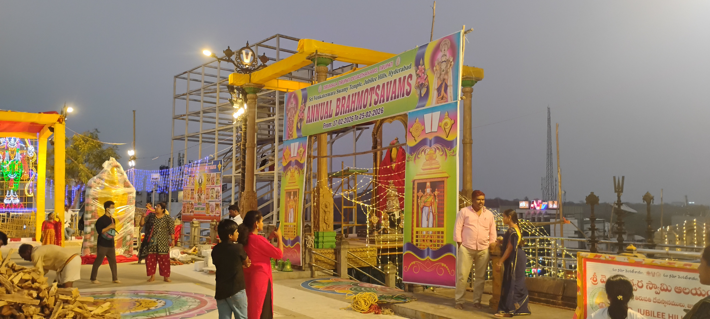

📸 మా యాత్రా చిత్రాలు
మేము స్వయంగా సందర్శించిన పుణ్యక్షేత్రాలు





🙏 జై శ్రీ వేంకటేశ్వర — సనాతన ధర్మ జయం
పండుగల కథలు, దేవాలయ చరిత్రలు, పూజా విధానాలు & శ్లోకాలు — తెలుగులో, విశ్వసనీయ మూలాలతో.
మన సనాతన ధర్మ సంపదను ఒకేచోట
మేము స్వయంగా సందర్శించిన పుణ్యక్షేత్రాలు

తెలుగు హిందువుల కోసం రూపొందించిన సమగ్ర ఆధ్యాత్మిక వేదిక మన హిందూ. మన సనాతన ధర్మంలోని పండుగల వెనుక కథలు, దేవాలయాల చరిత్రలు, పూజా విధానాలు, శ్లోకాలు-స్తోత్రాలు, ఆచార్యుల జీవితాలు, పురాణ గాథలు — అన్నీ ఒకేచోట, మన మాతృభాష తెలుగులో, సులభంగా చదవగలిగే రూపంలో అందిస్తున్నాం. ప్రతి కథనం పూర్తి వివరాలతో, అసలైన మంత్రాలతో, విశ్వసనీయ మూలాల ఆధారంగా రూపొందించబడింది.
పౌరాణిక గాథలు వివరంగా
పూజా విధానాలు తాత్పర్యంతో
దేవాలయ చరిత్ర, సమయాలు
v11tv యాత్రా అనుభవాలు
అత్యంత పురాతనమైన వేదం. 10,552 మంత్రాలు. గాయత్రీ మంత్రం ఇందులోనిదే.
సంగీత రూపంలో పాడే మంత్రాలు. భారతీయ సంగీతానికి మూలం.
యజ్ఞ విధానాలు. పూజలలో ఉపయోగించే మంత్రాలు.
రోజువారీ జీవనం, ఆయుర్వేదానికి సంబంధించిన విషయాలు.
హైదరాబాద్ నుండి తిరుపతి పూర్తి ప్రయాణ అనుభవం.
తిరుపతి పూర్తి గైడ్ →మన హిందూ — తెలుగు మాట్లాడే హిందువుల కోసం రూపొందించిన ధార్మిక పోర్టల్. దేవాలయ యాత్రలు, 18 మహాపురాణాలు, పండుగలు, శ్లోకాలు, భక్తుల గాథలు — మన సనాతన ధర్మ సంపదను ఒకేచోట, తెలుగులో, పూర్తిగా ఉచితంగా అందిస్తున్నాం.